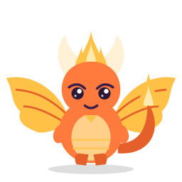
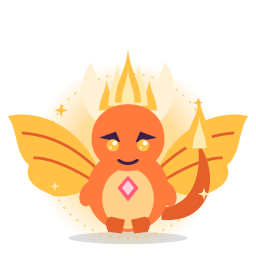
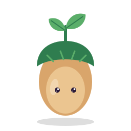
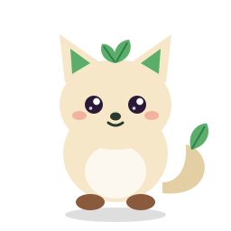
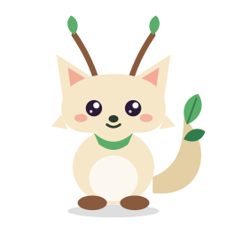
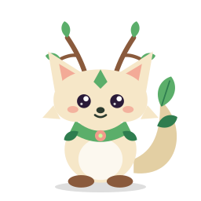
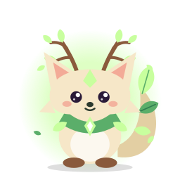

3 tür x 5 evre. Geliştirici yer tutucusudur; nihai sanat illüstratör tarafından yapılacaktır. Küçük boyut testi için 48 px satırlarına bakın.
kivilcim)kivilcim-1.svgkivilcim-2.svgkivilcim-3.svg
kivilcim-4.svg
kivilcim-5.svgdinamo)dinamo-1.svgdinamo-2.svgdinamo-3.svgdinamo-4.svgdinamo-5.svgsedir)
sedir-1.svg
sedir-2.svg
sedir-3.svg
sedir-4.svg
sedir-5.svg